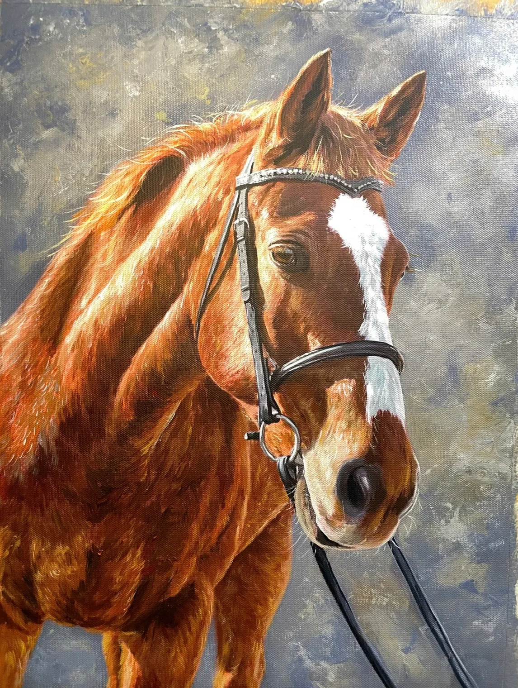

Every painting
begins with love.
Thoughtful from the first photograph to the last brushstroke. A personal process, with your companion at its heart.

01 / THE BEGINNING
Choose your vision.
Select your preferred size and number of companions, then share the photographs that feel most like them.
02 / THE ARTWORK
Made by hand.
The painting is individually composed and painted in oils, with attention to expression, colour and character.
03 / THE FINISHING TOUCHES
Ready to treasure.
After the final brushstroke, your original painting is carefully prepared for shipping. We confirm the delivery arrangements for your destination.